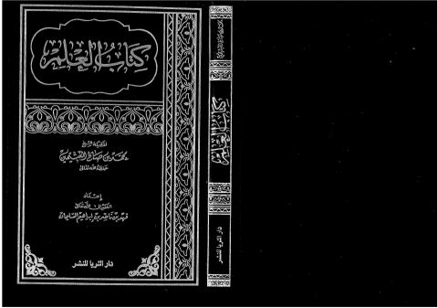

كتاب العلم
Authors: محمد بن صالح العثيمين
Editors: فهد ناصر إبراهيم
Publishers: الثريا
Download Downloads need an internet connection.
- Published
- 1999
- Country
- الرياض، السعودية
- Edition
- 1
- Volumes
- 1
- Pages
- 192
- Type
- كتاب
- Category
- المكتبات والمصادر
Description
**▫️ العنوان: كتاب العلم** ▪️ المؤلف: #محمد_صالح_العثيمين ▫️ المحقق: #فهد_ناصر_إبراهيم ▪️ الناشر: #الثريا ▫️ تاريخ النشر: 1999 ▪️ بلد النشر: الرياض، #السعودية ▫️ الطبعة: 1 ▪️ عدد الأجزاء: 1 ▫️ الصفحات: 192 ▪️ نوع الوعاء: #كتاب ▫️ التصنيف الرئيسي: #المكتبات_والمصادر ۪